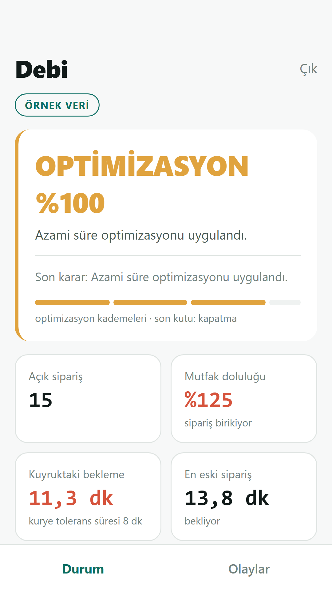
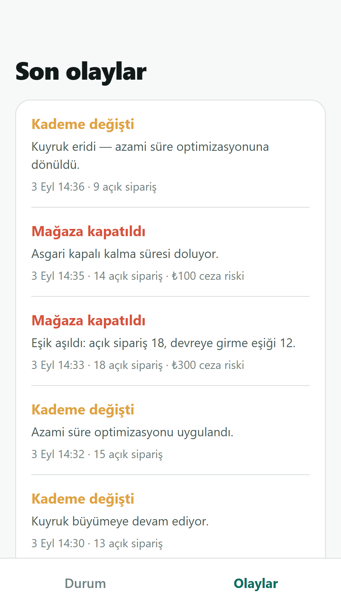

01 · SAYAR
Tüm siparişleri tek yükte görür
Platformlar, siteniz, QR ve kasadan gelen işi aynı mutfağın yükü olarak izler.
Restoran ve marketler için
Uber Eats, GetirYemek ve Yemeksepeti siparişleri aynı anda mutfağı doldurduğunda Debi yükü erkenden fark eder. Gecikme, iptal ve iade riskini azaltmak için sipariş hızını mutfağınızın kaldırabileceği seviyede tutar.
Yoğunluk bitince ayarları geri alır. Mağazayı durdurmak son çaredir; isterseniz bu seçeneği tamamen kapatabilirsiniz.
İlk 7 gün yalnızca ölçüm. Onayınız olmadan hiçbir ayar değişmez.
Üç adımda Debi
Çalışanınızın ekran başında yoğunluğu kollamasını beklemez. Yükü sayar, zamanında müdahale eder ve iş normale dönünce geri çekilir.
01 · SAYAR
Platformlar, siteniz, QR ve kasadan gelen işi aynı mutfağın yükü olarak izler.
02 · DENGELER
Eşik aşılınca süreleri kademe kademe artırır. Sipariş tamamen kesilmeden mutfağa nefes aldırır.
03 · GERİ ALIR
Süreleri kendiliğinden geri çeker. Kısa duraklatma gerekiyorsa mağazayı zamanında yeniden açar.
Yoğun saatte geç kalan sipariş yalnızca bir teslimat sorunu değildir. İade, iptal ve platform kesintileri doğrudan o günün kazancından çıkar.
Yoğunluğun özeti
Debi sipariş akışını daha erken yavaşlatarak açık sipariş yükünü mutfağın çıkarabileceği seviyeye yakın tutmayı amaçlar.
İki ekran, tek sistem
Debi'nin motoru işletmedeki bilgisayarda çalışır. Telefon uygulaması yalnızca izler; mağazayı açıp kapatamaz ve ayar değiştiremez.
Bilgisayar: siparişleri toplar, yoğunluğa karar verir ve platform ayarlarını yönetir.
Telefon: açık siparişi, mutfak doluluğunu, etkin kademeyi ve son kararları gösterir.


İlk ay ücretsiz
Debi ilk gün mağazanıza dokunmaz. Önce kendi verinizle nerede para kaybetme riski oluştuğunu gösterir.
Hiçbir ayar değişmeden açık sipariş yükü izlenir.
Yoğun günler, saatler ve hesaplanan ceza riski görünür.
Eşikler ve kısa duraklatma tercihi birlikte belirlenir.
Yalnızca siz isterseniz otomatik müdahale başlar.
Kontrol sizde
Kararlar restoranınızdaki bilgisayarda alınır; sipariş kayıtları bize gönderilmez.
Müşteri adı, telefonu ve adresi karar kayıtlarına alınmaz.
İstediğiniz anda bilgisayardan müdahale edebilir veya kapatmayı devre dışı bırakabilirsiniz.
İlk 7 gün yalnızca ölçüm. Raporu gördükten sonra devam edip etmeyeceğinize siz karar verin.
Nasıl çalışır
Debi bütün kanallardaki açık siparişleri tek yük olarak görür. Yoğunluk başladığında önce süreleri ayarlar; mağazayı kısa süre durdurmak her zaman son seçenektir.
01 · TEK SAYI
Uber Eats, GetirYemek, Yemeksepeti, site, QR ve POS siparişleri aynı mutfağın yükünde birleşir.
02 · ERKEN KARAR
Mutfağınıza göre belirlenen sınır aşılınca Debi bir sonraki kademeye geçer. Tek bir ani siparişle gereksiz müdahale etmez.
03 · OTOMATİK DÖNÜŞ
Kuyruk eridikçe süreleri normale çeker. Kısa duraklatma olduysa mağazayı süresi dolunca yeniden açar.
Müşterinin gördüğü teslimat veya hazırlık süresi biraz uzadığında sipariş gelişi yavaşlar; mağazanız açık kalmaya devam eder. Mutfak hâlâ yetişemiyorsa bir üst kademeye geçilir.
En yüksek kademe de yetmezse Debi mağazayı kısa süre durdurabilir. Bu özelliği istemiyorsanız kapatabilirsiniz; Debi yalnızca süreleri yönetir.
Platformlarda süre ve yoğunluk ayarları zaten var. Sorun, mutfağın en yoğun anında doğru ayarı bütün kanallarda açıp sonra zamanında geri almaktır. Debi bu tekrarı otomatikleştirir.
Çalışanınız istediği anda bilgisayardan kontrolü devralabilir. Elle verilen kararın süresi dolunca sistem otomatiğe döner.
İlk 7 gün Debi kararlarını kaydeder ama uygulamaz. Böylece eşikleriniz kendi sipariş geçmişinize göre kontrol edilir; canlı kullanıma ancak siz onay verirseniz geçilir.
Neden Debi
Yoğun saat iyi giden işletmenin doğal sonucudur. Sorun yoğunluk değil; mutfak dolduktan sonra hâlâ aynı hızda sipariş almaya devam etmektir.
Geç kalan sipariş iptal, iade ve platform kesintisi riski yaratır. Ürün hazırlanmışsa malzeme ve emek de geri gelmez. Debi yükü daha erken görüp süreleri mutfağın hızına yaklaştırır.
Debi bir reklam veya satış aracı değildir. Gelen işi daha sağlıklı yöneterek yoğun saatin kazancının gecikme ve iptallerle erimesini azaltmayı amaçlar.
Ne kadar fark yaratacağını ilk haftanın sonunda kendi veriniz söyler.
Platformlar
Debi her kanaldaki siparişi tek yükte toplar, fakat müdahaleyi o platformun izin verdiği şekilde yapar.
Son güncelleme: 6 Eylül 2026
| Kanal | Durum | Debi ne yapabilir? |
|---|---|---|
| Uber Eats | Hazır | Siparişleri sayar. Sipariş kabul biçiminize göre hazırlık süresini, kendi kuryeniz varsa teslimat süresini ve mağaza durumunu yönetebilir. |
| GetirYemek | Hazır | Siparişleri yük hesabına alır. Kullanılabilecek süre ve mağaza ayarları, hesabınızın bağlantı yetkilerine göre kurulum sırasında doğrulanır. |
| Yemeksepeti | Ek kurulum | Neden ek kurulum? Yemeksepeti siparişleri Debi tarafından çekilmez; sipariş bildirimlerinin Debi'nin güvenli sipariş adresine gönderilmesi ve mağaza yetkilerinin tanımlanması gerekir. Bu bağlantıyı kurulumda birlikte tamamlarız. Ardından Debi siparişleri yük hesabına alır ve mağazayı kısa süreli açıp kapatabilir. Bu platformda süre artırma bağlantısı olmadığı için kademeler mağaza durumu üzerinden çalışır. |
| Kendi siteniz · QR · POS | Hazır | Siparişleri sayar; sisteminiz destekliyorsa teslimat süresini ve mağaza durumunu yönetir. Restoran ve marketlerde kullanılabilir. |
Siparişi siz kabul ediyorsanız Debi hazırlık süresine dokunmaz; kullanılabilen diğer ayarlar çalışmaya devam eder. Otomatik kabul isteğe bağlıdır ve kurulumda kapalı gelir.
Güvenlik ve veriler
Debi karar verirken mümkün olan en az veriyi kullanır. Müşteri bilgileri kayda alınmaz; telefon uygulaması mağazanızı yönetemez.
Kısa duraklatmanın üst süresi bellidir. Süre dolunca Debi mağazayı yeniden açmayı dener.
Mağazayı siz kapattıysanız Debi açmaz. Yalnızca kendi verdiği kararları geri alır.
Bilgisayar yeniden açıldığında Debi son durumu okur ve kendi kapattığı mağazayı açmayı dener.
Bir bağlantı sorun yaşarsa diğer kanallar çalışmaya devam eder.
Mağaza açılamaz, kapatılamaz ve eşikler değiştirilemez. Parolayı bilgisayardan istediğiniz an yenileyebilirsiniz.
Müşteri adı, telefonu, adresi ve konumu karar motoruna veya olay kayıtlarına yazılmaz.
Son güncelleme: 6 Eylül 2026
Kısa hâli: Debi işletmenizdeki bilgisayarda çalışır. Sipariş kayıtlarınız bizim sunucumuza gelmez. Telefon uygulaması reklam, analiz veya izleme aracı içermez ve hesap açmanızı istemez.
Telefon, işletmenizdeki bilgisayara yerel ağ üzerinden bağlanır. Telefonda yalnızca bilgisayarın ağ adresi ve bağlantı parolası işletim sisteminin güvenli deposunda saklanır. Ekrandaki sipariş sayıları ve kararlar kalıcı olarak kaydedilmez.
“Çıkış yap” seçeneği kayıtlı adresi ve parolayı siler. Telefon kaybolursa bilgisayardaki parolayı yenilemek eski bağlantıyı geçersiz kılar.
Uygulama müşteri adı, telefon, adres veya konum bilgisi almaz. Kamera, mikrofon, kişiler, fotoğraflar ve konum izni istemez.
Ayarlar, olay kayıtları ve platform bağlantı bilgileri işletmedeki bilgisayarda tutulur. Debi bu bilgilerle platformların kendi bağlantılarına gider; arada Debi'ye ait bir veri sunucusu bulunmaz.
Olay kayıtları 90 gün saklanır ve müşteri kişisel verisi içermez. Programı kaldırdığınızda veya veri klasörünü sildiğinizde bizde tutulmuş ikinci bir kopya bulunmaz.
Formda verdiğiniz işletme ve iletişim bilgileri yalnızca size dönüş yapmak için kullanılır. Form iletim hizmeti dışında üçüncü kişilere pazarlama amacıyla aktarılmaz veya satılmaz. Silinmesini istediğinizde info@getdebi.com adresine yazabilirsiniz.
Debi'nin veri kullanımı değişirse bu politika ve güncelleme tarihi değiştirilir. Yeni bir veri toplama amacı eklenirse açıkça belirtilir.
Sık sorulanlar
Kısa cevaplar burada. Platform ayrıntıları ve veri politikası kendi sayfalarında daha kapsamlıdır.
Bütün kanallardaki açık siparişleri tek yükte toplar. Mutfağınıza göre belirlenen eşik aşılınca önce süreleri artırır; yük düşünce geri alır. Platformların yoğunluk ayarlarından farkı, doğru anda bütün kanallarda devreye girip kararı kendiliğinden geri almasıdır.
Yoğun anda bazı müşteriler daha uzun süre görüp vazgeçebilir. Debi'nin amacı her siparişi almak değil; yetişmeyecek siparişin gecikme, iptal veya iade olarak daha büyük kayıp yaratmasını azaltmaktır.
Bu dengenin işletmenizde nasıl sonuç vereceğini ilk ücretsiz ayda ölçeriz.
Varsayılan değerlerle başlamayız. Varsa geçmiş sipariş ve ceza kayıtlarını inceler, ilk 7 günlük ölçümle mutfağınızın hangi yükte zorlandığını kontrol ederiz. Son ayarlar sizin onayınızla kullanılır.
Yalnızca süre artışları yetmezse ve siz izin verdiyseniz kısa süreli duraklatabilir. Kapatmayı tamamen devre dışı bırakabilirsiniz; bu durumda mağaza açık kalır ve Debi yalnızca süreleri yönetir.
Uber Eats, GetirYemek, Yemeksepeti ve kendi site/QR/POS kanalınız desteklenir. Her platformun izin verdiği ayar farklıdır. Siparişleri tabletten kendiniz kabul etmeye devam edebilirsiniz.
Güncel ayrıntılar Platformlar sayfasında.
Evet, dikkatli bir çalışan yapabilir. Bunun için yoğun servis sırasında bütün platform ekranlarını izlemesi, toplam mutfak yükünü doğru değerlendirmesi, ayarları tek tek değiştirmesi ve yük düşünce hepsini zamanında geri alması gerekir.
Debi çalışanınızın yerini almaz; bu tekrar eden takibi üstlenir. Tek platformla ve düşük hacimle çalışıyorsanız Debi'ye ihtiyaç duymayabilirsiniz. Birden fazla kanal aynı mutfağı dolduruyorsa unutulan her ayarın maliyeti büyür.
Uber Eats Yoğun Modu kendi platformundaki hazırlık süresini artırabilir ve siparişleri duraklatabilir. Yalnızca Uber Eats kullanıyor ve ayarı doğru anda elle açıp kapatabiliyorsanız bu özellik yeterli olabilir.
Debi yalnızca diğer kanalları bir araya getirmez. Kurulumda yüklediğiniz geçmiş sipariş raporundan restoranınızın yoğun günlerini, sıkıştığı saatleri ve personel düzeyine göre yaklaşık kapasitesini çıkarır; ilk 7 gün bunu gerçek sipariş akışıyla sınar. Böylece eşikler genel bir restoran varsayımına değil, sizin mutfağınıza göre belirlenir.
Ardından Uber Eats, GetirYemek, Yemeksepeti, site, QR ve POS yükünü tek mutfak olarak izler. Toplam yük restoranınıza özel sınırı aşınca kademeyi otomatik değiştirir; yoğunluk bitince ayarı geri alır.
Kendi site, QR veya POS siparişlerini aktarabilen marketlerde çalışabilir. Her şubenin mutfağı ve yoğunluğu ayrı olduğu için her şubeye ayrı Debi kurulumu gerekir; bütün şubeleri tek ekrandan yönetme özelliği henüz yoktur.
İşletmede sürekli açık kalan bir Windows bilgisayar ve kullandığınız platformların bağlantı bilgileri gerekir. Kurulum paketini siz açabilirsiniz; isterseniz kurulumu birlikte yaparız.
Mağaza zaten açıksa kesinti onu kapatmaz. Debi'nin kısa süreli duraklattığı anda bağlantı kesilirse mağaza, bağlantı dönene kadar kapalı kalabilir. Bilgisayar yeniden açıldığında Debi yalnızca kendi kapattığı mağazayı açmayı dener.
Bu riski istemiyorsanız kapatma özelliğini devre dışı bırakabilirsiniz.
İlk ay ücretsizdir; ilk 7 gün yalnızca ölçüm yapılır. Raporu ve önerilen eşikleri gördükten sonra canlı kullanıma geçip geçmemeye siz karar verirsiniz. Ücretsiz dönem kendiliğinden ücretli aboneliğe dönüşmez.
Telefon uygulaması açık siparişi, mutfak doluluğunu, etkin kademeyi ve son kararları gösterir. Mağazayı yönetemez ve ayar değiştiremez. Varsayılan kullanımda telefon, işletmedeki bilgisayarla aynı ağda olmalıdır.
Sipariş kayıtları işletmedeki bilgisayarda kalır; müşteri adı, telefonu ve adresi kaydedilmez. Ayrıntılar Güvenlik ve Veriler sayfasında.
1 ay ücretsiz
İlk 7 gün Debi hiçbir ayarı değiştirmeden işletmenizi izler. Yoğunluğun hangi gün ve saatlerde oluştuğunu, hesaplanan ceza riskini ve önerilen başlangıç ayarlarını tek sayfalık raporda görürsünüz.
Raporu gördükten sonra devam edip etmeyeceğinize siz karar verirsiniz. Ücretsiz dönem kendiliğinden ücretli kullanıma dönüşmez.
Telefon numarası ve doğrudan iletişim için İletişim sayfasına bakabilirsiniz.
Sorusu olan, fiyat soran ya da sadece nasıl çalıştığını merak eden herkes ulaşabilir. Ücretsiz denemeye başvuracaksanız formu doldurmak daha hızlı.